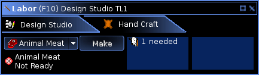
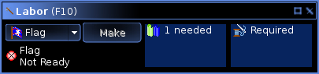
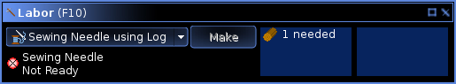
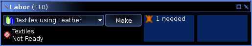
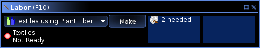
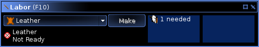

Hand Crafting a Flag
A flag is needed to establish a new city. When you start the game as an emperor of a new empire, you start with nothing. The first thing you need to do is acquire a flag. Then you can build the town square of your first city and grow an empire.
A flag can be handcrafted from raw materials. The environment of a habitable world contains all of the raw materials needed to handcraft a flag.
Display the Labor (F10) window. The Labor window offers controls for handcrafting items. Like all windows in Shores of Hazeron, the Labor window can be stretched bigger if needed.
Depending on your location, tabs for other labor activites may be present. Select the Hand Craft tab if there are multiple tabs, otherwise the only controls present will be the hand crafting controls.
Hand Crafting a Flag
Select the Flag as the item to hand craft. The window shows that the flag requires a textile and a sewing needle. The textile is shown in the left box because it will be consumed by the process. The sewing needle is shown in the right box because it is required by the process but not consumed.
Press the Make button to hand craft a flag. The textile is removed from your inventory and replaced with a flag. There is a slight chance, depending on the quality of the textile, that the textile will fail to produce a flag. In this case, the textile is consumed but no flag appears in your inventory. The sewing needle is used so it may wear down a little. When the sewing needle is worn out, it will disappear from your inventory.
If you are a new emperor, the Make button is grey because you do not have a textile or a sewing needle. Each of these items can be hand crafted.
Hand Crafting a Sewing Needle
Select Sewing Needle using Log as the item to hand craft. The window shows one log will be consumed and no tools are required.
Press the Make button to hand craft a sewing needle. A log is removed from your inventory and replaced with a sewing needle.
The Make button will be grey if you do not have a log. A log can be foraged from the environment. Read How To Forage From the Environment for a brief tutorial on obtaining a log.
Hand Crafting a Textile
There are two methods for hand crafting a textile. One method uses leather and the other method uses plant fiber. Leather can be hand crafted. Plant fiber can be foraged from the environment.
If you have leather, select Textile using Leather as the item to hand craft. The window shows one piece of leather will be consumed and no tools are required.
If you have plant fiber, select Textile using Plant Fiber as the item to hand craft. The window shows two units of plant fiber will be consumed and no tools are required.
Press the Make button to hand craft a textile.
Hand Crafting Leather
Select Leather as the item to hand craft. The window shows that an animal carcass will be consumed and that no tools are required. To acquire an animal carcass, kill an animal or locate an animal that has been killed recently.
Press the Make button to hand craft a piece of leather.
Next (HowTos/How to Build Your First City) ->